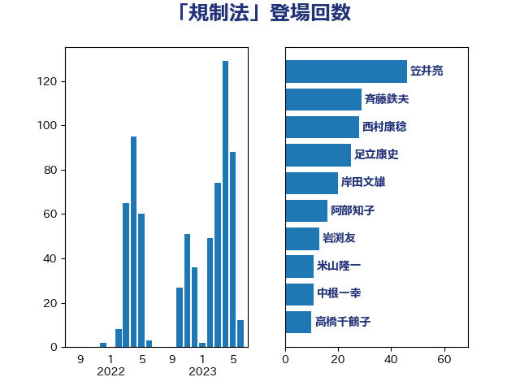

単語「規制法」

| 笠井亮 | 日本共産党 | 46 回 |
| 斉藤鉄夫 | 公明党 | 29 回 |
| 西村康稔 | 自由民主党 | 28 回 |
| 足立康史 | 日本維新の会 | 25 回 |
| 岸田文雄 | 自由民主党 | 20 回 |
| 阿部知子 | 立憲民主党 | 16 回 |
| 岩渕友 | 日本共産党 | 13 回 |
| 米山隆一 | 立憲民主党 | 11 回 |
| 中根一幸 | 自由民主党 | 11 回 |
| 高橋千鶴子 | 日本共産党 | 10 回 |
| 萩生田光一 | 自由民主党 | 10 回 |
| 櫛渕万里 | れいわ新選組 | 9 回 |
| 斎藤嘉隆 | 立憲民主党 | 9 回 |
| 吉良よし子 | 日本共産党 | 8 回 |
| 辻元清美 | 立憲民主党 | 7 回 |
| 山本太郎 | れいわ新選組 | 7 回 |
| 逢坂誠二 | 立憲民主党 | 6 回 |
| 近藤昭一 | 立憲民主党 | 6 回 |
| 浜野喜史 | 国民民主党 | 6 回 |
| 浅野哲 | 国民民主党 | 6 回 |
| 山岡達丸 | 立憲民主党 | 6 回 |
| 細田博之 | 自由民主党 | 5 回 |
| 細田健一 | 自由民主党 | 5 回 |
| 福島伸享 | 無所属 | 5 回 |
| 神津たけし | 立憲民主党 | 5 回 |
| 小宮山泰子 | 立憲民主党 | 5 回 |
| 塩川鉄也 | 日本共産党 | 5 回 |
| 齋藤健 | 自由民主党 | 4 回 |
| 鬼木誠 | 立憲民主党 | 4 回 |
| 柚木道義 | 立憲民主党 | 4 回 |
| 平山佐知子 | 無所属 | 4 回 |
| 山崎誠 | 立憲民主党 | 4 回 |
| 大口善徳 | 公明党 | 4 回 |
| たがや亮 | れいわ新選組 | 4 回 |
| 長峯誠 | 自由民主党 | 3 回 |
| 野村哲郎 | 自由民主党 | 3 回 |
| 西村智奈美 | 立憲民主党 | 3 回 |
| 菅直人 | 立憲民主党 | 3 回 |
| 石垣のりこ | 立憲民主党 | 3 回 |
| 田村智子 | 日本共産党 | 3 回 |
| 田村まみ | 国民民主党 | 3 回 |
| 河西宏一 | 公明党 | 3 回 |
| 後藤茂之 | 自由民主党 | 3 回 |
| 小山展弘 | 立憲民主党 | 3 回 |
| 古川禎久 | 自由民主党 | 3 回 |
| 野田国義 | 立憲民主党 | 2 回 |
| 葉梨康弘 | 自由民主党 | 2 回 |
| 羽田次郎 | 立憲民主党 | 2 回 |
| 空本誠喜 | 日本維新の会 | 2 回 |
| 福島みずほ | 社会民主党 | 2 回 |
| 石原宏高 | 自由民主党 | 2 回 |
| 石井苗子 | 日本維新の会 | 2 回 |
| 片山大介 | 日本維新の会 | 2 回 |
| 新垣邦男 | 立憲民主党 | 2 回 |
| 平林晃 | 公明党 | 2 回 |
| 市村浩一郎 | 日本維新の会 | 2 回 |
| 川合孝典 | 国民民主党 | 2 回 |
| 山添拓 | 日本共産党 | 2 回 |
| 山口俊一 | 自由民主党 | 2 回 |
| 小林茂樹 | 自由民主党 | 2 回 |
| 大河原まさこ | 立憲民主党 | 2 回 |
| 城井崇 | 立憲民主党 | 2 回 |
| 和田有一朗 | 日本維新の会 | 2 回 |
| 佐藤公治 | 立憲民主党 | 2 回 |
| 伊波洋一 | 無所属 | 2 回 |
| 中谷真一 | 自由民主党 | 2 回 |
| 中村裕之 | 自由民主党 | 2 回 |
| こやり隆史 | 自由民主党 | 2 回 |
| 高木かおり | 日本維新の会 | 1 回 |
| 馬場伸幸 | 日本維新の会 | 1 回 |
| 長友慎治 | 国民民主党 | 1 回 |
| 鈴木義弘 | 国民民主党 | 1 回 |
| 鈴木淳司 | 自由民主党 | 1 回 |
| 金子恵美 | 立憲民主党 | 1 回 |
| 進藤金日子 | 自由民主党 | 1 回 |
| 足立敏之 | 自由民主党 | 1 回 |
| 谷公一 | 自由民主党 | 1 回 |
| 西村明宏 | 自由民主党 | 1 回 |
| 西岡秀子 | 国民民主党 | 1 回 |
| 紙智子 | 日本共産党 | 1 回 |
| 篠原孝 | 立憲民主党 | 1 回 |
| 穂坂泰 | 自由民主党 | 1 回 |
| 穀田恵二 | 日本共産党 | 1 回 |
| 福岡資麿 | 自由民主党 | 1 回 |
| 礒崎哲史 | 国民民主党 | 1 回 |
| 石井正弘 | 自由民主党 | 1 回 |
| 田島麻衣子 | 立憲民主党 | 1 回 |
| 牧山ひろえ | 立憲民主党 | 1 回 |
| 渡辺周 | 立憲民主党 | 1 回 |
| 永岡桂子 | 自由民主党 | 1 回 |
| 榛葉賀津也 | 国民民主党 | 1 回 |
| 梅村みずほ | 日本維新の会 | 1 回 |
| 松野博一 | 自由民主党 | 1 回 |
| 村田享子 | 立憲民主党 | 1 回 |
| 本庄知史 | 立憲民主党 | 1 回 |
| 志位和夫 | 日本共産党 | 1 回 |
| 岸真紀子 | 立憲民主党 | 1 回 |
| 山東昭子 | 自由民主党 | 1 回 |
| 山口壯 | 自由民主党 | 1 回 |
| 小野泰輔 | 日本維新の会 | 1 回 |
| 小沼巧 | 立憲民主党 | 1 回 |
| 小林一大 | 自由民主党 | 1 回 |
| 宮本徹 | 日本共産党 | 1 回 |
| 室井邦彦 | 日本維新の会 | 1 回 |
| 大島九州男 | れいわ新選組 | 1 回 |
| 大塚耕平 | 国民民主党 | 1 回 |
| 塩田博昭 | 公明党 | 1 回 |
| 堤かなめ | 立憲民主党 | 1 回 |
| 嘉田由紀子 | 無所属 | 1 回 |
| 古川元久 | 国民民主党 | 1 回 |
| 伊藤渉 | 公明党 | 1 回 |
| 井林辰憲 | 自由民主党 | 1 回 |
| 井上哲士 | 日本共産党 | 1 回 |
| 串田誠一 | 日本維新の会 | 1 回 |
| 中野洋昌 | 公明党 | 1 回 |
| 上野賢一郎 | 自由民主党 | 1 回 |
| ながえ孝子 | 無所属 | 1 回 |